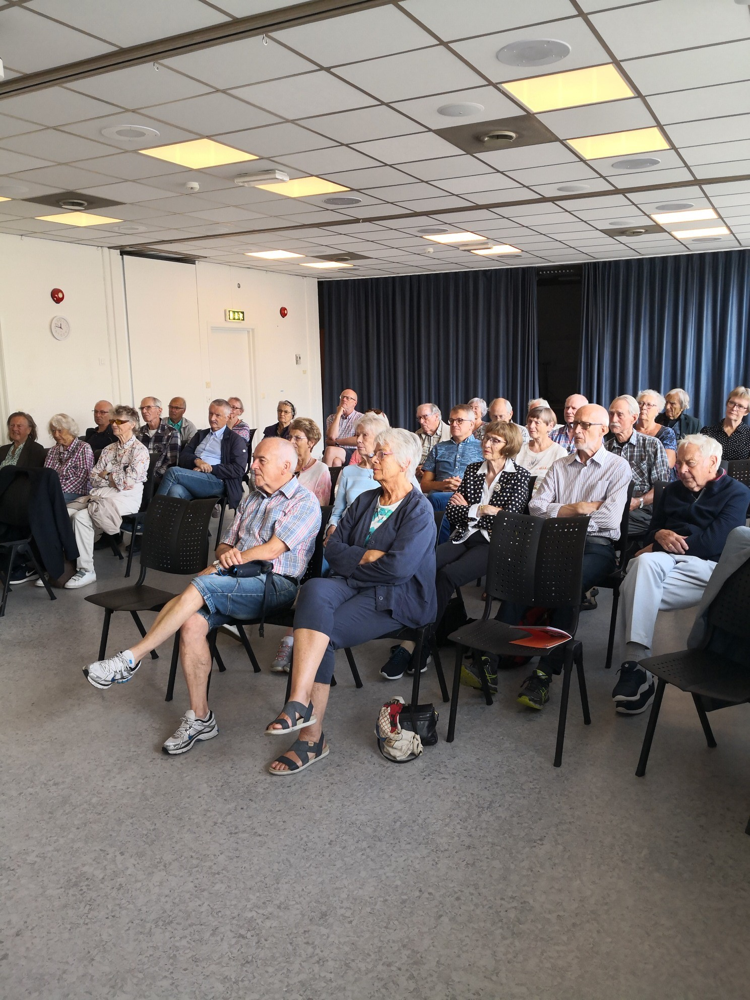

Senioruniversitetet, Kristiansand. 29.08.2019
Leiv Storesletten
Niels Henrik Abel er ungguten frå Agder som har fått eit verdsnamn innan matematikkens historie. Han blir enno rekna som ein av verdas fremste matematikarar, og er den mest kjente norske vitskapsmannen gjennom tidene. Han er eit ikon og har vore ein stor inspirator for norsk forsking gjennom to hundreår.
Niels Henrik er eit av få absolutte geni i norsk historie, seier biografen, Arild Stubhaug. I løpet av eit kort og svært produktivt liv - han vart berre 26 ½ år gammal – gjorde han ei rekkje banebrytande oppdagingar. Han utvikla teoriar som snudde opp ned på gamle problemstillingar og opna for nye felt og arbeidsområde i matematikken. I ettertid er hans teoriar blitt ståande som milepelar i fagets utvikling.
Niels Henrik Abel var fødd i 1802 på Finnøy i Ryfylke, der faren var sokneprest. Men alt to år seinare flytte familien til Gjerstad i Aust-Agder, der Niels Henrik voks opp saman med fem sysken. Både foreldre og besteforeldre hadde tilknyting til Agder.
Faren, Søren Georg Abel (1772-1820), var særs evnerik, føretaksam og idérik. Etter språkleg-filosofisk og teologisk embetseksamen i København, vart han kapellan hjå faren i Gjerstad. I året 1800 vart han gift med Anne Marie Simonsen (1781-1846), dotter til ein velståande kjøpmann og skipsreiar i Risør. I fire år var dei prestefolk på Finnøy, før han overtok som sokneprest i Gjerstad etter faren.
Søren Georg utmerkte seg på mange vis, vart m.a. utnemnd til riddar av Dannebrog for innsatsen han gjorde med kystvernet i Ryfylke. Han vart vald som stortingsmann både i 1814 og i 1818. Han døydde allereie i 1820 - 48 år gammal. Dei siste åra hadde det gått nedover med prestefolket i Gjerstad, dei vart begge liggjande under for alkohol, og soknepresten sjølv vart innvikla i ymse feidar. Mor til Niels Henrik , Anne Marie, skulle vera uvanleg vakker, men er skildra som heilt karakterlaus.
Etter at Søren Georg døydde i 1820, vart tilhøva i heimen svært vanskelege. Trass i at den unge Niels Henrik var flytt heimanfrå fleire år tidlegare, fekk også han merka familievanskane.
Hausten 1815 - 13 år gammal- kom Niels Henrik Abel inn på Katedralskolen i Kristiania. Skulen rådde over mange legat, og Abel fekk heile skuletida friplass og stipend.
Etter eit par år fekk han ny matematikklærar, Bernt Holmboe, seinare professor ved Universitetet. Dette vart avgjerande for Abel, for Holmboe var ein utruleg dyktig og inspirerande lærar. Han underviste og rettleia Abel på ein mønstergyldig måte, og evnene hans vart vekte for alvor. Han las allereie verk av dei store klassikarane i matematikk, som Euler og Lagrange, og si tids største matematikarar som Gauss og Poisson.
Holmboe skreiv seinare:
Nå oppofret han seg matematikken med den mest brennende iver og gikk fremad i denne vitenskap med en hurtighet som kun er geniets egen.
Dei elementære matematikk-førelesingane på Universitetet kunne ikkje gje Abel noko som helst.
Abel tok studenteksamen i1821- 19 år gammal. Karakterane var middels, med unntak av matematikk, der han fekk beste karakter – «1 med slange». Same hausten vart han student på Universitetet. Faren var død, og den økonomiske situasjonen var yttarst vanskeleg. Men Abel, som alt var kjend i universitetskrinsar, fekk gratis husvære på Regensen – ein universitetsstiftelse. For å sikra det unge geniet sjansar til å via seg for studium, slo ein del universitetslærarar seg saman og gav han eit privatstipend – ein fast sum pr. månad – i høgste grad eit rosverdig tiltak.
Det fanst ingen matematisk-naturvitskapleg embetseksamen ved UiK på den tida, og unge Abel kunne ofra seg heilt til matematiske studiar. Dei første åra gjorde han ferdig fleire kortare avhandlingar, som lenge vart oppfatta som mindre viktige. Først trekvart hundreår seinare viste det seg at eitt av desse arbeida var særs viktig. Abel løyser ei såkalla integrallikning, og var kanskje den første som tok opp problem i denne greina av faget – teorien innan dette feltet var utvikla først kring år 1900.
I dei siste par åra på Katedralskolen byrja Abel for alvor å prøva evnene sine på større matematiske problem. Han gjekk laus på eitt av dei fundamentale uløyste spørsmål i samtida, nemleg spørsmålet om å løysa den allmenne femtegrads-likninga ved rot- utdraging. Problemet med andregradslikninga var løyst allereie i oldtida. På 1500-talet greidde italienske matematikarar å finna løysingsformlar for likningar av 3. og 4. grad. I dei følgjande hundreåra hadde mange av dei fremste matematikarane fåfengt forsøkt å løysa den allmenne 5- gradslikninga.
Medan han enno gjekk på Katedralskolen, utleidde Abel ein løysingsformel for 5-gradslikninga som han meinte var riktig. Holmboe synst også det såg riktig ut, og sende avhandlinga vidare til professorane Rasmussen (rein matematikk) og Hansteen (anvend matematikk) ved Universitetet. Dei kunne heller ikkje finna feilrekningar eller feilslutningar.
Det var ikkje råd å få publisert vitskaplege arbeid i Kristiania på den tida. Difor sende professor Hansteen avhandlinga til professor Degen i København, som då var den mest kjende matematikaren i Skandinavia. Han fann heller ingen feilslutningar, men hadde større røynsler enn sine norske kollegaer, og visste at mange store matematikarar hadde søkt å løysa 5-gradslikninga utan hell. Degen seier om løysinga:
«Den viser, om enn ikke målet er nådd, et ualminnelig hoved og ualminnelige innsikter, især i hans alder. Dog må jeg som bønn tilføye den betingelse ; at Hr. Abel sender en utførligere deduksjon av sitt resultat og tillige et numerisk eksempel.»
Då Abel fekk Degens svar, sette han seg ned for å anvenda formelen på konkrete eksempel og fann at løysinga ikkje kunne vera riktig i alle tilfelle. Han vart skuffa, men gav ikkje opp. Han arbeidde så mykje med problemet at han kjende seg viss på at likningar av 5te grad eller høgare ikkje let seg løysa ved rotteikn i det allmenne tilfellet.
Unge Abel sette seg som mål å visa dette, og han greidde det snaue 22 år gammal ! For å sjå dette meisterstykket i sitt rette lys, må vi hugsa på at han dermed løyste eit eldgammalt problem som mange av dei største matematik- arane gjennom hundreåra hadde prøvt seg på utan å lukkast. Berre denne eine avhandlinga ville ha gjeve Abel eit stort namn i matematikkens historie ! Abels løysing blir rekna for eit oppsiktsvekkjande vendepunkt i matematikkens idéhistorie. Kvifor ? Bevismetoden var elegant og banebrytande!
Abel sysla ikkje berre med likningsteori i denne tida. Han arbeidde også med fundamentale problem innan integralrekning, og gjorde svært viktige oppdagingar.
I 1824 søkte Universitetet staten om eit toårig reisestipend for Abel. Ein var fullt klar over det geni som budde i den unge studenten, og at han trong få kontakt med leiande matematikarar i Tyskland og Frankrike. I universitets- miljøet i Kristiania hadde han ingenting å læra.
Departementet avslo i første omgang, dei meinte Abel var så ung at han burde bli heime for å utdanna seg vidare i «sprog og andre bividenskaper». Men året etter – i 1825 fekk Abel sitt stipend, 600 spd. årleg i to år. I september drog han ut på si store, viktige Europa-reise. Store delar av reisa var han saman med nokre studiekameratar som også hadde reisestipend.
Først gjekk turen til Berlin. Reisa var godt planlagt, han skulle prøva å møta flest mogeleg betydelege matematikarar. I denne samanhengen hadde han med seg «anbefalingsbrev», frå R og H. I Berlin møtte han straks den innflytelsesrike matematikaren og ingeniøren August Leopold Crelle. Det utvikla seg eit nært venskap mellom Abel og Crelle, eit venskap som fekk svært mykje å seia for Abel. Matematikken hadde ikkje så sterk stilling i Tyskland som i Frankrike. Vel hadde Tyskland den store Gauss i Gøttingen, men han var ikkje særleg miljøskapande. Frankrike derimot hadde ein hel skule av framifrå matematikarar som Legenre, Cauchy, Poisson, Laplace, osv. Der fanst også eit matematisk tidskrift.
Abel sa til Crelle at han undra seg over at det ikkje fanst eit vitskapleg tidsskrift for matematikk i heile Tyskland. Crelle , som var bekymra over situasjonen, tok då på seg å redigera ein «Journal for rein og anvend matematikk», gjerne kalla Crelles Journal. Denne journalen vart det leiande matematiske tidsskriftet i Tyskland og heile verda på 1800-talet.
Dette vart eit lukketreff for Abel. I løpet av tre månader hadde han ferdig seks avhandlingar som skulle trykkjast i dei tre fyrste hefta av journalen. Seks avhandlingar på tre månader ! – alle førsteklasses arbeid – nokre merkesteinar i matematikkens historie. I sanning ein eineståande prestasjon av ein 23-åring.
Men det største av alle arbeida sine - addisjonsteorema for elliptiske integral – det venta Abel med å offentleggjera til han kom til Paris. Dette arbeidet ville han leggja fram for Akademiet der – det fremste vitskapsakademiet på den tida. Der var samla eit dusin av samtidas førande matematikarar.
Den endeleg redigeringa av den store avhandlinga si – den såkalla Pariser- avhandlinga – utførte Abel etter han kom fram. Som nesten alt han skreiv, var avhandlinga lysande klar, men svært omfattande – heile 67 trykksider i hans samla verk. Ideane var heilt nye og sikkert vanskeleg å forstå.
Den 30. oktober 1826 vart avhandlinga lagd fram for Akademiet og to namngjetne matematikarar, Legendre og Cauchy, vart oppnemnde som doms- nemnd. Abel hadde grunn til å venta at dette meisterstykket av ei avhandling ville bli den endelege sigeren for han. Diverre gjekk det ikkje slik. Avhandlinga vart liggjande ulesen på Cauchys arbeidsbord. Cauchy var på dette tidspunktet oppteken med eigne epokegjerande arbeid.
Først etter Abels død kom kommisjonen med ein kortfatta hastverk-uttale der avhandlinga vart godteken. Det var etter fleire oppmodingar frå bl.a. fram- ståande tyske matematikarar. Men då var allereie hovudresultata frå Pariser- avhandlinga publisert i Crelles Journal. Den endeleg publiseringa av heile avhandlinga skjedde først i 1841. Sjølve originalmanuskriptet kom bort – for alltid trudde ein. Men den norske matematikaren Viggo Brun fann det att i 1952, i eit manuskriptbibliotek i Firenze.
Det blir påstått at neppe noko avhandling i matematikken historie har fått så mange lovord som denne Abels Pariser-avhandling:
Over hundre år etter Abels fødsel seier den tyske matematikaren Krazer:
«Dette er ei av dei største matematiske avhandlingar som nokon gong er skriven».
Den franske matematikaren Picard seier på same tid om hovudteoremet i avhandlinga:
«Det finnes vel ikke noe resultat i videnskapens historie som er så viktig og som er bevist ved så enkle midler».
Opphaldet i Paris vart på fleire vis litt av eit vonbrot for Abel. Avhandlinga høyrde han ikkje meir til, og franskmennene var vanskelegare å koma på talefot med enn tyskarane. Han kjende seg einsam og var plaga av heimlengt. Dessutan fekk han store økonomiske problem - hadde råd til berre eitt måltid for dagen. Reisa tilbake til heimlandet gjekk om Berlin, der han stansa ei kort tid.
La oss så fortelja om den namngjetne kappestriden mellom Abel og ein annan ung genial matematikar, Jacobi (1804- 1851) i Köningsberg.
Emnet var teorien om elliptiske funksjonar. Den gamle og berømte Legendre i Paris hadde lagt ned eit livsverk i dette studiet. Han og andre trudde nok at alt var gjort, feltet var utforska. Men Abel hadde no ferdig ei stor og banebrytande avhandling som revolusjonerte heile emnet.
Men samtidig kasta Jacobi seg inn i studiet av same emne. Han offentleg- gjorde ein del fine og generelle resultat som han ikkje var i stand til å bevisa i første omgang. Legendre var likevel overbegeistra. Den store Gauss fekk kjennskap til Jacobis resultat, men vart nærmast litt irritert då det berre var brotstykke av hans eigne, upubliserte studium over same emne. Det var tydeleg at Gauss ville ta seg saman for å få ut sine eigne teoriar før det var for seint. Men då Abels store avhandling kom, må det ha gjort eit heilt anna inntrykk på Gauss:
«Herr Abel har nå, som jeg ser, kommet meg i forkjøpet og har tatt møien i fra meg med hensyn av en tredjedel av disse saker, særlig da han har gjort alle utviklinger med så megen eleganse og skarphet».
Han svarar Crelle på same måten:
«Da han (Abel) nå også med hensyn til fremstillingen har lagt så megen skjønnhet og eleganse for dagen, så ser jeg meg herved aldeles fritatt for utarbeidelsen av disse gjenstander».
Jacobis første resultat har neppe gjort særlig inntrykk på Abel. Dei var nærmast spesialtilfelle av hans eigne resultat, og dessutan utan bevis.
Legendre og andre pressa no Jacobi for å få han til å bevisa satsane sine. Det blir påstått at etter Jacobi hadde lese Abels første store arbeid om emnet, fekk han idear til sine eigne bevis. Han nyttar der dei hjelpemiddel Abel hadde skapt og publiserte avhandlinga utan å nemna Abels namn.
Abel som no var heimkomen til Kristiania, fekk litt av eit sjokk då han las Jacobis arbeid. Men han reiste ingen prioritetsstrid. Han nøyer seg med å skriva si andre store avhandling om emnet, ei avhandling som han spøkefullt kalla sin «dødelse av Jacobi». Her ser han heile teorien frå eit langt meir generelt og høgare synspunkt enn Jacobi. Avhandlinga vart publisert sommaren 1828, og striden var i røynda avgjord.
For ikkje å gjera Jacobi urett, nemner vi at han i brev til Legendre nyttar sterke lovord om eitt av Abels bidrag:
«Jeg holder dette bevis for et av analysens skjønneste mesterstykker».
Etter Abels død, ca.1830, er Jacobi mektig imponert av -
«hvordan Abel på en enkel form, uten anvendelse av analytisk verktøy, uttrykker den dypeste og mest omfattende matematiske idé. Dette er den største opp- dagelse i vår tid, skjønt først et fremtidig stort arbeide vil avdekke dets fulle betydning».
Abel kom tilbake til Kristiania i mai 1827. Han gjekk eit vanskeleg halvår i møte. Stipendet var oppbrukt før tida, og han hadde inga stilling å gå til. Same hausten som han drog utanlands, vart det ledig ei lektorstilling i matematikk ved Universitetet. Abel søkte, men vart forbigått av den eldre og meir erfarne læraren sin, Bernt Holmboe. Denne tilsetjinga har nok fått hard kritikk i ettertid.
Det bør nemnast at Abel, trass i sine små midlar, hadde måtta støtta familien etter at faren var død. Særleg støtta han den yngre broren Peder, som studerte i Kristiania, og han hjelpte systera Elisabeth, som også kom til hovudstaden. Gjennom brev han skreiv frå utlandet, er det rørande å sjå den omsut han hadde for desse to, både at dei skulle greia seg økonomisk og elles skikka seg vel.
Etter heimkomsten søkte Universitetet departementet om eit mellombels stipend for Abel, men fekk blankt avslag. Han måtte såleis leva på lån og gjeld og dels privatundervisning. Men frå hausten tok Universitetet skeia i eiga hand, tok av eigne fond og gav han eit eittårig stipend på 200 spd.
Frå byrjinga av 1828 vart han konstituert som vikar for professor Hansteen for inntil to år.
På denne tida hadde Abel allereie fått eit stort ry i vitskaplege krinsar i Europa. Aktive matematikarar måtte leggja merke til den stendige straum av nye resultat frå Abels hand, resultat som spente over mange ulike område. Fleire av avhandlingane var så avgjorde meisterverk at Abel på kort tid vart ein av dei mest omtala matematikarane på kontinentet.
Ein kjende også til dei økonomiske vanskane han hadde, og den usikre stillinga hans. Crelle arbeidde no energisk for å skaffa han eit professorat ved universitetet i Berlin, men det drog ut førebels. Vidare gjekk Akademiet i Paris til det uvanlege steget å senda eit brev til svenskekongen Karl Johan, der dei bad han gjera seg gjeldande for å skaffa Abel ei fast stilling. Brevet var underskrive av fire framståande vitskapsmenn, mellom dei Legendre og Poisson. Dette brevet fekk Abel aldri greie på.
Sommaren og hausten 1828- året etter heimkomsten – var Abel plaga av ein byrjande tuberkulose. Motstandskrafta var nok redusert etter lengre tids fattigdom og eit umenneskeleg arbeidspress. Han skreiv i det heile matematikk mest ustanseleg dei siste åra.
Jula 1828 reiste han til Froland hovudgard i Aust-Agder for å feira jula saman med henne han var trulova med, nemleg Christine Kemp, som var guvernante der.
Den 6. januar 1829 vart Abel ferdig med si siste avhandling, det var eit par siders bevis for hovudteoremet i Pariseravhandlinga. Han var no overtydd om at Akademiet i Paris ikkje ville trykkja det arbeidet han rekna som sitt meisterverk. For å sikra eigedomsretten, måtte han få det viktigaste publisert. Avhandlinga vart trykt i Crelles Journal ei vekes tid før Abel døydde.
Om dette Abels teorem skreiv den svenske matematikaren Mittag-Lefler at det framleis, hundre år etter Abels fødsel
«representerer høgdepunktet i den matematiske utviklinga».
Abel hadde ikkje krefter til å reisa tilbake til førelesingspliktene ved Universitetet etter juleferien. Etter ei mellombels betring gjekk det stendig nedover, trass i at han fekk den beste pleie av kjærlege hender i ein velståande heim.
Han døydde den 6. april 1829 – 26 år og 8 månader gammal – og vart gravlagd ved Froland kyrkje.
Den 8. april, to dagar seinare- kunne Crelle gledesstrålande fortelja frå Berlin at undervisningsministeriet hadde gjort vedtak om å kalla Abel til eit professorat i Berlin. «De kommer til et godt land, til et bedre klima, nærmere vitenskapen og til oppriktige venner som setter pris på Dem og er glad i Dem», skreiv Crelle.
Det vekte sorg og vonbrot i vitskaplege krinsar både i Tyskland og Frankrike då det vart kjent at den norske matematikaren Abel var død.
Crelle skreiv eit vakkert minneord i Journalen, som vart lese i vide krinsar og attgjeve i eit fransk tidsskrift, og omsett i norske aviser. Vi siterer:
«Alle Abels arbeider bærer merket av en skarpsindighet og tankestyrke som var ualminnelig og ofte likefrem forbausende, selv om forfatterens ungdom ikke tas i betraktning. Han trengte gjennom alle hindre, kan det sies, like til grunnlaget av problemene, med en styrke som virket uimotståelig, han angrep dem med en energi som var ekstraordinær, han så dem ovenfra og hevet seg så langt over deres nåværende tilstand at alle vanskeligheter syntes å forsvinne foran den seierrike kraft i hans geni (…).
Men det er ikke alene hans store talent som har skapt respekt for Abel, og som gjør at en alltid vil sørge over tapet. Han utmerket seg like meget ved sin karakters renhet og adel, og ved en beskjedenhet av de sjeldne, som gjorde han avholdt i samme grad som hans geni var uvanlig».
Både Legendre og den unge Jacobi kom med liknande lovord. Jamvel den reserverte Gauss i Gøttingen kalla Abels død for
«Et meget stort tap for vitenskapen».
Året etter - i 1830 – vart Abel «post mortem» tildelt ein stor pris av Akademiet i Paris for framifrå vitskapleg arbeid. Pengane gjekk til Abels familie.
Vi kan trygt seia at Niels Henrik Abel er eitt av dei største matematiske geni som har levd. Trass i at han døydde så altfor ung, sette han djupe spor etter seg i matematikken. Han gav fundamentale bidrag til fleire felt, bidrag som fekk avgjerande innverknad på utviklinga på faget.
Vi kan trygt seia at Niels Henrik Abel er eitt av dei største matematiske geni som har levd. Trass i at han døydde så altfor ung, sette han djupe spor etter seg i matematikken. Han gav fundamentale bidrag til fleire felt, bidrag som fekk avgjerande innverknad på utviklinga på faget.
Vi nemner dei viktigaste felta: Likningsteori, integralrekning med vekt på elliptiske integral, teorien for elliptiske funksjonar og teorien for uendelege rekkjer. Abel er saman med Cauchy ein av grunnleggjarane av moderne matematisk analyse.
Crelle avslutta minneordet sit med å kalla Abel for
«et av disse sjeldne vesener som naturen knapt skaper én gang i et århundre»
Den store tyske matem. Weierstrass (1844-1897) seier en generasjon seinare:
«Lesen Sie Abel».
At Abel har ein stor plass i matematikken, er innlysande. Men spelar den matematikken han skapte noka rolle i dagens samfunn ? Rett forstått kan vi trygt svara ja. Men vi må ha klart for oss at den imponerande mengda av vitskaplege arbeid han skapte, var typisk grunnforsking – utvikling av ny basiskunnskap i faget. Metodane som blir skapte for å nå dei nye resultata, er ofte like viktige og stundom viktigare enn teorema.
Matematikk har frå 1600-talet og fram til i dag vore drivkrafta bak og grunnlaget for utviklinga av naturvitskap og teknologi. I siste instans er matematikken ein av grunnpilarane i dagens moderne samfunn.
Senioruniversitetet i Kristiansand, 29.08. 2019
Leiv Storesletten
Professor emeritus,
Universitetet i Agder
Trygve Breiteig, Leiv Storesletten og Karl Robertsen
